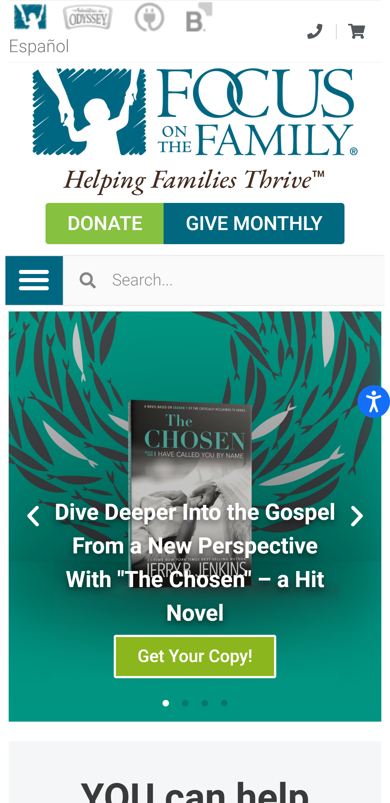

Visual Hierarchy
Focus on the family
focusonthefamily.com The site focuses on the sliding photos which contains hyperlinks to take the user to the page. On the header, The donate and give monthly buttons have been included to signify their prime importance for the organisation.
Repeatition
Focus on the family
focusonthefamily.comThe Donate and Give monthly buttons have been placed at the header and below the home page slide images. This shows repeatition and is one way to make website users see what they might have missed on another part of the website.
White space and clean design
Focus on the family
focusonthefamily.comThere is enough white space between different sections on the home page. It is easy to find what one is looking for on the page because of the white spaces that have been placed which is making the website look clean.